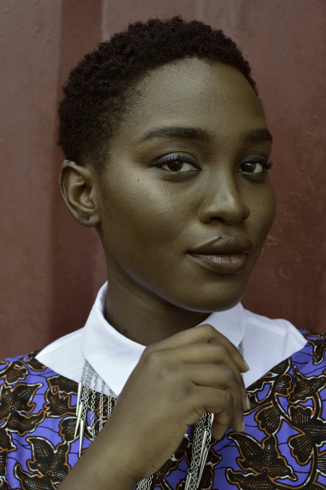
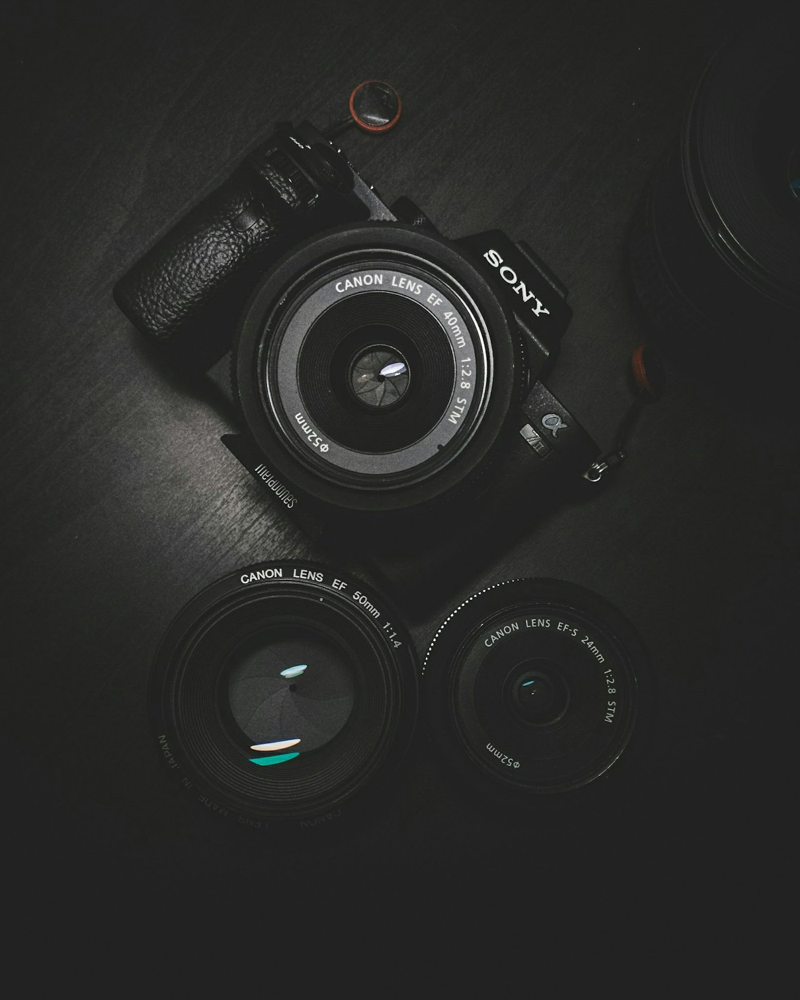

Independent designerWorking globally

Brought the eye of portrait and documentary photographer Elin Brandt online, with soft transitions that frame every image.

Brought the eye of portrait and documentary photographer Elin Brandt online, wit